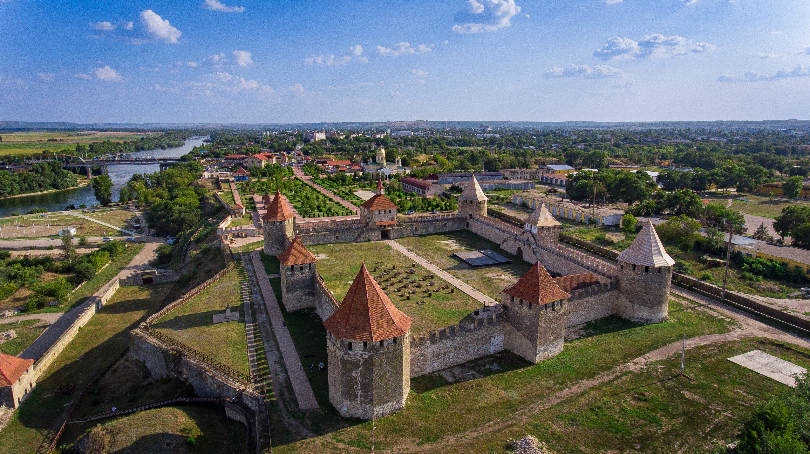
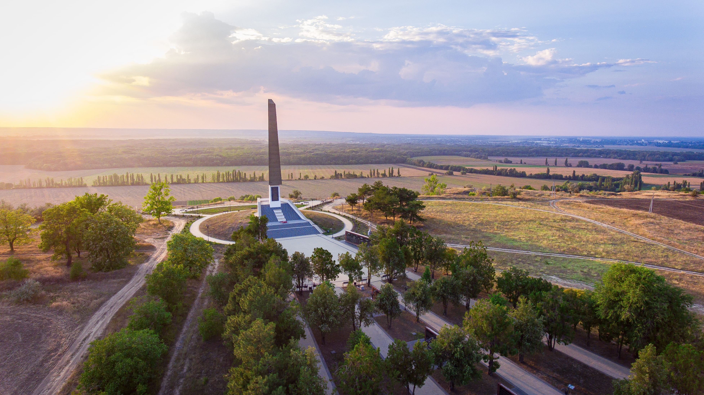
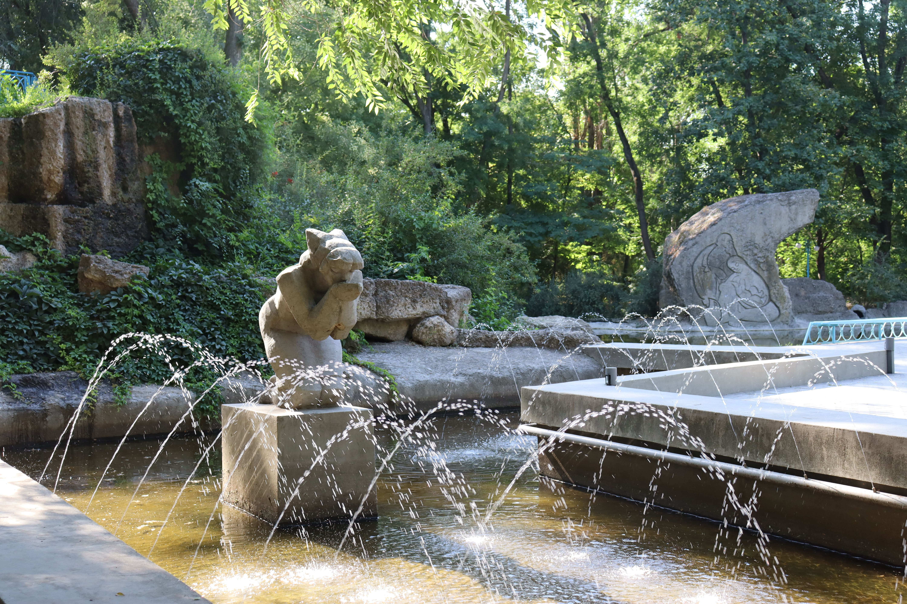
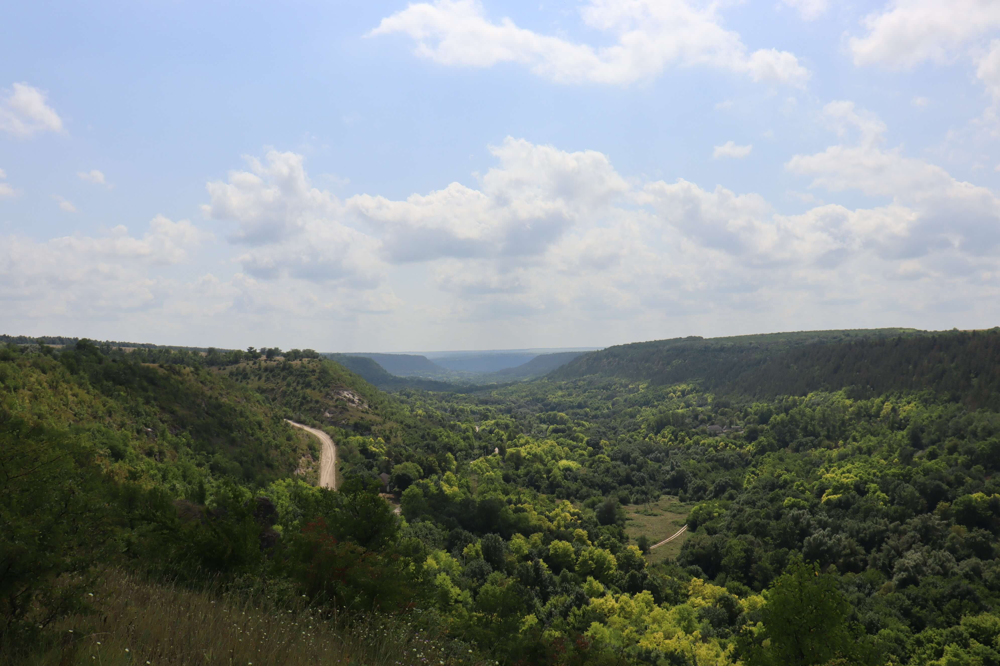

Маршрут вне туристических шаблонов.
Настоящие крепости и символы эпох.
Локальная кухня и винные традиции.
Люди и традиции. Жизнь изнутри.
Природа Днестра и тишина.
Индивидуально. Внимание к деталям.

Приднестровье начинается здесь. Проложите маршрут от ближайших аэропортов до Бендерской крепости: